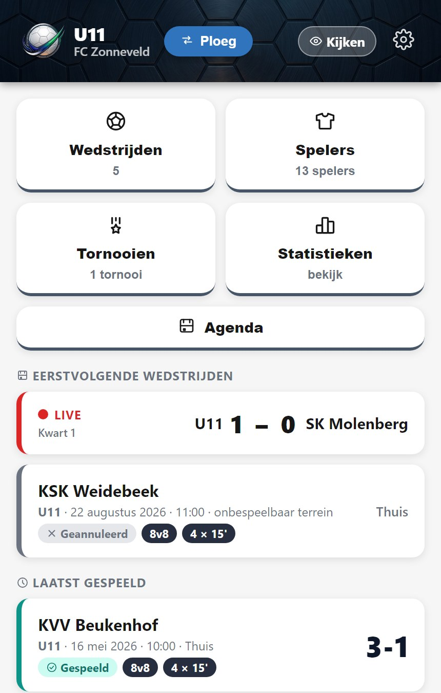
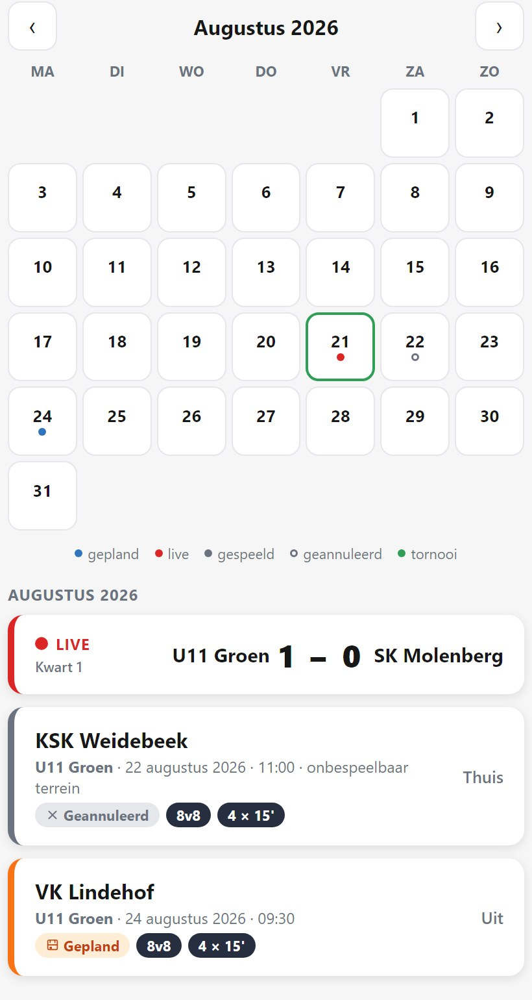
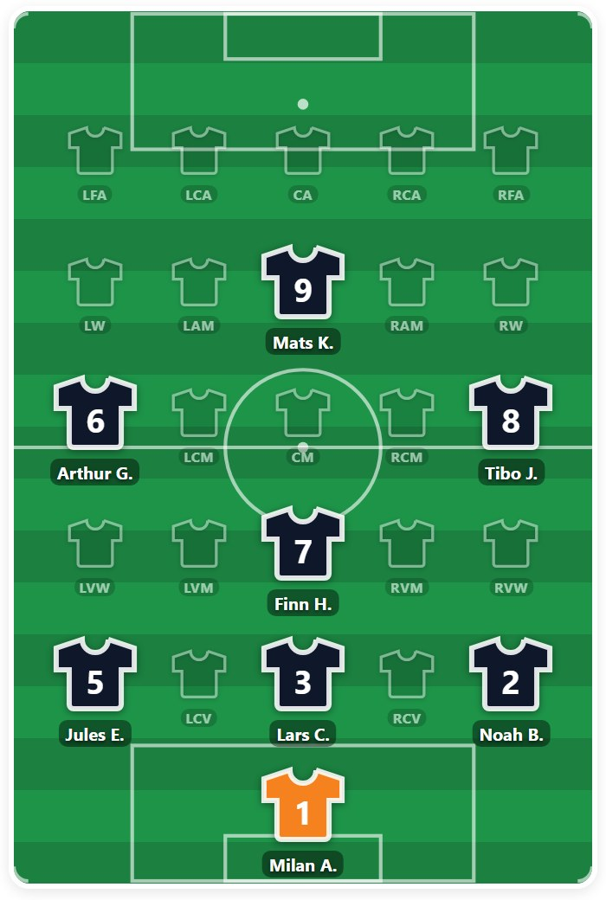
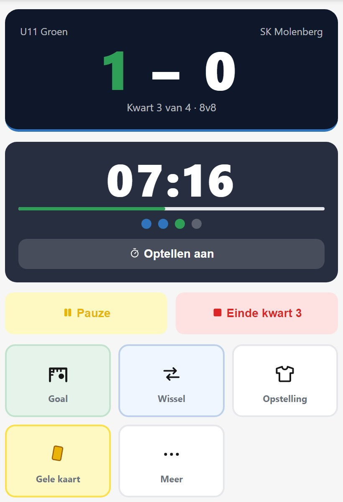
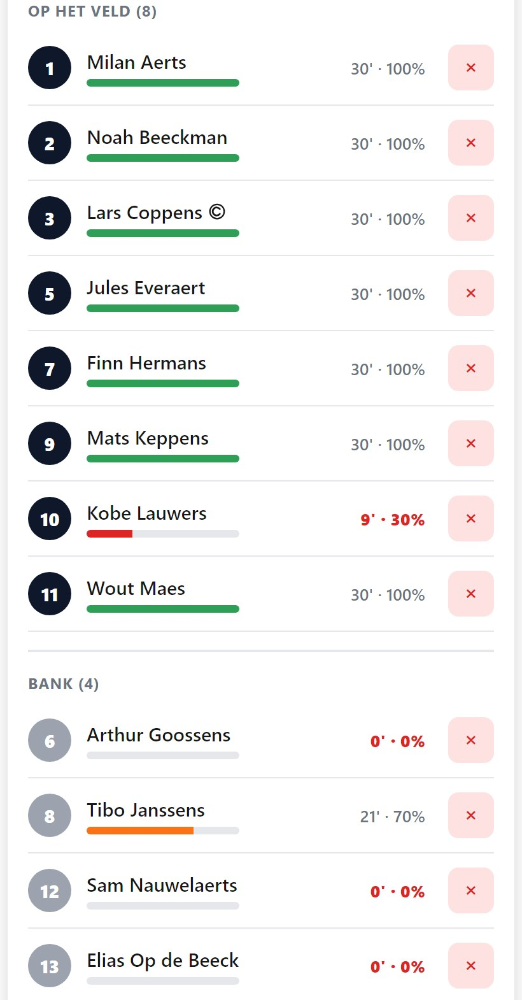
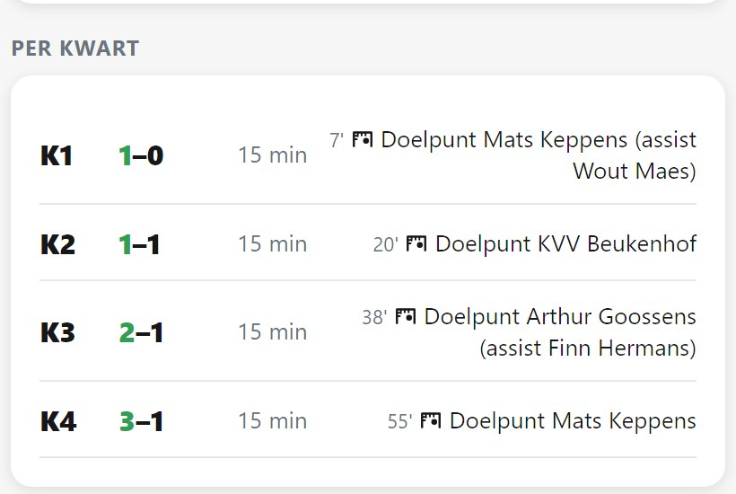
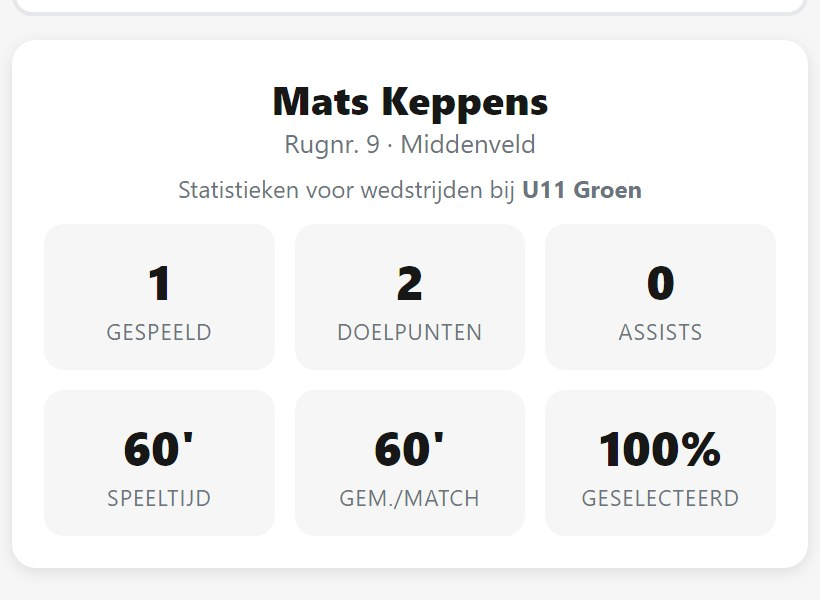

De app waarmee de afgevaardigde of de trainer aan de zijlijn de jeugdwedstrijd volgt: opstelling, wissels, doelpunten en kaarten, kwart per kwart. Thuis kijken de ouders mee.
Loopt vandaag bij twee jeugdploegen van een Oost-Vlaamse club.

Een schriftje, een blad in de tas, een berichtje na de match. Daardoor valt er niets te vergelijken tussen ploegen, en als een trainer stopt, verdwijnt zijn manier van werken met hem. En de vraag die elk seizoen terugkomt — speelt mijn zoon wel genoeg? — beantwoordt u met een gevoel in plaats van met een cijfer.
De wedstrijdkalender komt binnen uit een agendabestand of uit Excel — ook een export van Foot24. Daarna staat de hele maand in één overzicht: wat gepland is, wat gespeeld is, wat afgelast werd en wat een tornooi is.

U zet elke speler op zijn plek op het veld, kwart per kwart, met de wissels erbij. Tijdens de match wijkt u ervan af zoals het valt — het plan is een vertrekpunt, geen keurslijf.
Bekijk een voorbeeldwedstrijdplan (PDF)
De stand, de klok van het kwart, en één tik per gebeurtenis: doelpunt, wissel, kaart of positiewissel. De speeltijd loopt mee zonder dat u iets moet rekenen, en vergist u zich, dan maakt u de laatste actie ongedaan. Werkt ook als het netwerk op het veld wegvalt.

De bank staat gesorteerd met wie het minst gespeeld heeft bovenaan, en achter elke speler staan zijn minuten. U ziet het dus op het moment dat u de wissel maakt — niet pas achteraf.

De opstelling van elk kwart, de stand per kwart, elk doelpunt met de minuut en de assist, en per speler zijn minuten per kwart. Te delen als PDF, en per seizoen ook uit te voeren naar Excel.
Bekijk een voorbeeldverslag (PDF, 5 pagina's)
Het scherm dat u opent vóór een gesprek met ouders: wedstrijden, doelpunten, speeltijd, het gemiddelde per match en hoe vaak hij in de selectie zat — over het hele seizoen, met de wedstrijden eronder.

Eén iemand van de club beheert de ploegen en geeft trainers toegang. Daar hebt u mij niet voor nodig.
Volgt de wedstrijd op in de app. Dat is het werk waarvoor ze gemaakt is.
Zet de kern klaar, plant de opstelling per kwart, bekijkt achteraf de cijfers van zijn ploeg.
Ziet alle ploegen van de club in één overzicht, en beheert zelf wie bij welke ploeg toegang heeft.
Kijkt live mee met de wedstrijd en met de statistieken van de ploeg, zonder iets te kunnen wijzigen — en zonder account als het moet.
Ook een tornooidag met meerdere korte wedstrijden houdt u in één geheel bij, met een verslag per tornooi.
Een half seizoen proefdraaien, kosteloos en zonder verbintenis: drie tot vijf ploegen gebruiken de app tot de kerstperiode, met één iemand van de club die de ploegen beheert.
Ik kom het één keer ter plaatse uitleggen aan de trainers en afgevaardigden, en ben tijdens de piloot bereikbaar. In januari bekijken we samen of het iets opgeleverd heeft.
Wat het kost
Tijdens de piloot niets. Daarna spreken we een prijs per ploeg per
seizoen af, in overleg met de club — één factuur, geen abonnement per trainer.
De vragen die trainers en coördinatoren als eerste stellen — inclusief wat er met de gegevens van de spelers gebeurt.
Nee. De kalender komt binnen uit een agendabestand (ICS), of uit Excel of CSV — ook de export van Foot24 werkt. Wedstrijden die al in de app staan worden herkend, dus u kan een bijgewerkte kalender opnieuw inlezen zonder dubbels.
3v3, 5v5, 8v8 en 11v11, en per wedstrijd kiest u of er in twee helften, drie delen of vier kwarten gespeeld wordt, met een vrij in te stellen duur. Dat volstaat voor de hele jeugdopleiding, van de allerkleinsten tot de U21.
Ja. De app werkt verder zonder verbinding — u blijft doelpunten en wissels ingeven zoals altijd. Zodra er weer bereik is, gaat alles naar de cloud. Dat is bewust zo gebouwd: op veel terreinen is er nu eenmaal geen netwerk.
Onderaan het wedstrijdscherm staat Laatste actie ongedaan maken. Een doelpunt bij de verkeerde speler of een wissel te vroeg ingegeven haalt u er zo weer uit. U kan een gebeurtenis ook achteraf nog rechtzetten in het verloop.
Op de speelklok, niet op de klok aan de muur. Een pauze tussen twee kwarten, een stilstand of een blessurebehandeling telt niet mee. Daardoor is "45 minuten gespeeld" ook echt drie kwart wedstrijd, en niet drie kwart aanwezigheid.
Ja. Per kwart zet u de spelers op hun plek op het veld, met de wissels erbij. Tijdens de match ziet u wat u gepland had, en u wijkt ervan af zoals het valt — het plan is een vertrekpunt, geen keurslijf.
Ja, als gast. Ze volgen de stand en het verloop live mee en kunnen niets wijzigen. De club bepaalt per ploeg welke onderdelen een meekijker te zien krijgt — bijvoorbeeld wel de uitslagen, niet de individuele statistieken.
Ja. Een tornooidag met meerdere korte wedstrijden houdt u als één geheel bij, met één selectie voor de hele dag en een verslag per tornooi.
Nee, en er is geen app store nodig. U opent de app in de browser van uw telefoon en kan ze daarna op het beginscherm zetten, waarna ze opent als een gewone app. Werkt op iPhone en op Android.
Het wedstrijdverslag is een PDF, klaar om te delen — ook rechtstreeks via WhatsApp. De cijfers per speler en per ploeg gaan naar Excel of CSV. Stopt de samenwerking, dan krijgt de club al haar gegevens mee.
Tijdens de piloot niets. Daarna spreken we een prijs per ploeg per seizoen af, in overleg met de club: één factuur, geen abonnement per trainer, alle functies inbegrepen. Neem contact op
Alleen de naam, en optioneel het rugnummer en de positie. Geen geboortedatum, geen adres, geen telefoonnummer, geen foto's en niets medisch — die velden bestaan niet. Daarnaast per wedstrijd of hij mee was, hoeveel hij speelde, en zijn doelpunten, kaarten en wissels.
In een databank in het datacenter van Google in Saint-Ghislain, dus in België, binnen de Europese Unie. Ze blijven eigendom van de club: ik verwerk ze enkel in haar opdracht, en bij de start van een samenwerking leg ik dat vast in een verwerkersovereenkomst. Een trainer ziet alleen zijn eigen ploeg. Er zijn geen andere partijen bij betrokken: geen reclame, geen statistiekendiensten, geen doorverkoop.